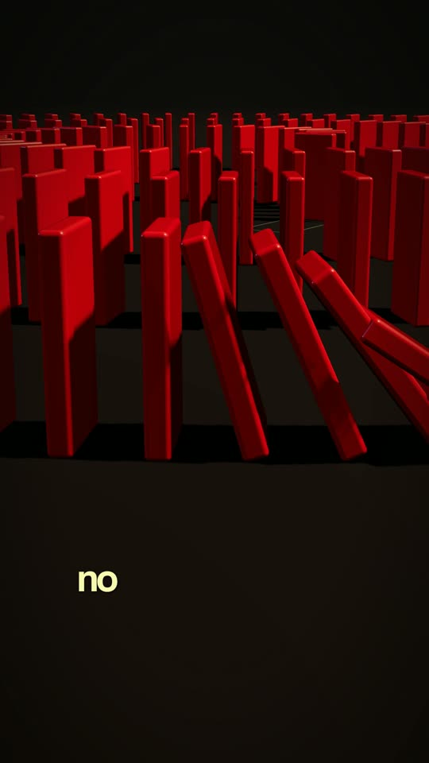
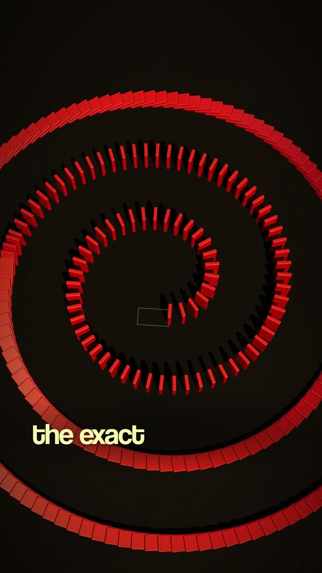
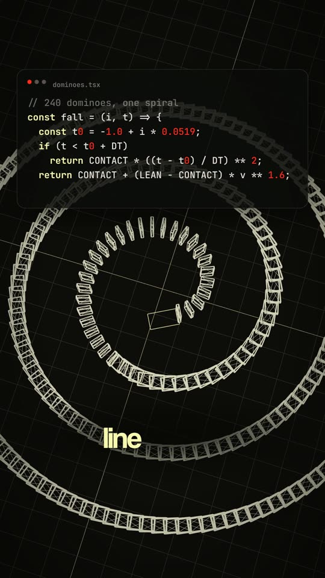
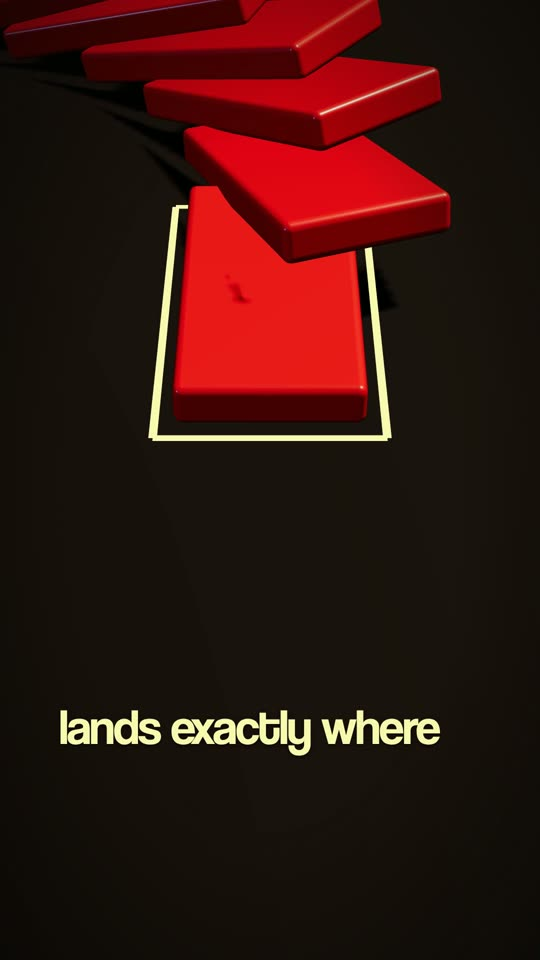

Free prompt pack · all of it
240 dominoes.Zero cameras.
Nothing in this video was filmed or generated by a video model. Every frame is code: a 3D scene Claude wrote, a voice cloned on my laptop, and the subtitles I use on every reel. It cost 0 credits.
Here are the four prompts, ready to paste into Claude Code. Each prompt is hidden behind a row of dominoes. Push the first one. Tap the floor to keep the big spiral falling.
Write the voice first
Everything else is timed to it. Clone a voice from a few seconds of clean audio, generate one file per line, then get the start and end of every word. The cuts, the dominoes and the subtitles all hang off those times.
Watch out
Trim the silence at both ends of every line before you place it. A line that starts with 200 ms of air pushes every cut late.
Fragments

The prompt 228 words
Make me a voiceover in my own voice with Chatterbox, the free open-source voice cloning model that runs on my computer. Install it in its own environment if it isn't there. REFERENCE Take 6 to 10 seconds of me talking with nothing else in the audio (no music, no effects) from the file I give you. Mono, 24 kHz. That clip is the only thing the voice is copied from. LINES 1. "No camera." 2. "No AI video model." 3. "Every frame of this is code." 4. "Two hundred and forty dominoes, and each one knows the exact frame it falls." 5. "Claude wrote it, line by line." 6. "And the last one lands exactly where it said." 7. "Comment code, and I'll send you the prompt." Generate each line on its own, with a fixed seed so I can regenerate one line without the others changing. Trim the silence at the start and end of every line. TIMELINE Place the lines one after another with these gaps before each: 0.15, 0.2, 0.45, 0.5, 0.9, 0.35 and 0.4 seconds. WORD TIMES Run faster-whisper with word timestamps on every line and write one file with the start and end of every word on the global timeline, using my script's words, not Whisper's spelling. Everything else in the video gets timed to those words: the cuts, the dominoes, the subtitles.
Time the dominoes to a word
The last one lands on "exactly". 240 dominoes on a spiral, timed backwards from the voice: the last one lands on the word.
- +1 intervalEach one hits the next at 17.5°
- +0.2 sIt settles at 73.4°
- "exactly"The last one lies flat
Watch out
Resting angle = acos(thickness ÷ spacing). Guess it and they sink into each other.
Fragments

The prompt 321 words
Write a script that lays out a domino chain and decides when every domino falls. Read the word timings from the voiceover first: the chain is timed to the voice, not the other way round. LAYOUT 240 dominoes, each 1 tall, 0.5 wide and 0.12 thick, standing on the floor and facing along the path. The path is an Archimedean spiral from the outside in: radius 9 at the start, 2.5 units between turns. Walk along the spiral in small steps and put a domino every 0.42 units of arc. With these numbers the last one ends up 1.2 from the centre. TIMING The last domino touches the floor 0.04 s after the voice starts the word "exactly". The first one starts falling at -1.0 s, so at frame 0 about nineteen are already down and the wave is moving. Spread the rest evenly between those two. With this voice that is one domino every 0.0519 s. HOW ONE DOMINO FALLS It pivots on its bottom front edge. From standing to the angle where it touches the next one, asin((0.42 - 0.12) / 1) = 17.5 degrees, it takes exactly one interval, accelerating (t squared). That's why the next one starts the instant it's hit. From there it settles in 0.2 s to its resting lean, acos(0.12 / 0.42) = 73.4 degrees, the angle at which two parallel dominoes rest on each other. The second to last rests at 78 degrees. The last one has nothing in front of it: it falls the full 90 degrees in 0.34 s and lies flat. SOUND Build a WAV with one short wooden click for every contact, at the exact time the next domino starts. A deeper, longer knock for the last one hitting the floor, plus a tiny bounce 70 ms later. Save the positions, directions and start times to a file the scene can import, so there is one source of truth.
Four shots, hard cuts
Every cut lands on the first word of a line. A low shot on the front, a crane to the top, the same crane in wireframe with the real code, and the rectangle the code drew first.
- 0.0 sLow, beside the falling front
- "Every"Crane up to the top
- "Claude"Wireframe + the code
Watch out
In 9:16 the lens sees only ~27° across. Up close the front left the frame: move back.
Fragments


The prompt 341 words
Build the video in Remotion with @remotion/three: 1080 x 1920, 30 fps, as long as the voice plus half a second. Use the domino file for every position and start time, and render the falls with exactly the formula from the chain script. LOOK Dark warm floor (#1B1815), background and fog #0E0C0B. Dominoes are glossy red, #FF2A1F, rounded edges, clearcoat. One warm key light from high on one side with soft shadows, a weak cool fill from the other side. On the floor, where the last domino will lie flat, draw a thin cream (#F8F8B0) rectangle a little bigger than the domino. It is there from the first frame: the code says where it will land before it happens. SHOTS, hard cuts only, each one on the first word of a line 0 to "Every": low and to the side, 4.5 units outside the path and 1.6 up, looking straight at the falling front and moving with it. Standing dominoes on one side of the frame, fallen ones on the other. "Every" to "Clawd": a crane that rises from a three-quarter view (radius 17, height 7.5) to almost straight down (radius 7, height 29), turning slowly the whole time, always looking at the centre. "Clawd" to "And": the same crane, but the scene switches to wireframe: cream wire dominoes on a cream grid, no floor. A code panel slides up at the top and the real falling function appears in it one line at a time, monospace, red numbers. "And" to the end: in front of the rectangle and a little high, so the last domino falls towards the camera and lies down inside the lines. Slow push-in. The rectangle brightens as the chain arrives and flashes once when the last one lands. END On "Comment", an Instagram-style comment box fades up above the subtitles and the word CODE types into it. SOUND The voice lines at their times, and the click track: quieter while the camera is high, loudest in the final close-up. No music, I add it in Instagram.
Letters that almost touch
Coolvetica, 100 px, -0.03 em. One short line at a time, lowercase, cream, a soft shadow and nothing else. Words that haven't been said yet keep their space, so the line never jumps.
Watch out
Over the cream wireframe the text dropped to 1.3:1. A dark ellipse behind the line, only in that shot, took it to 5.5:1.
The prompt 193 words
Add word-by-word subtitles that look exactly like these, from the voiceover word timings. TYPE Coolvetica regular (free from Typodermic), 100 px on a 1080-wide frame, colour #F8F8B0. Letter spacing -0.03 em, so the letters almost touch. Add the same amount as text-indent so the line stays centred. Soft shadow straight down, no outline, no box: 0 3px 5px rgba(0,0,0,0.45), 0 1px 14px rgba(0,0,0,0.30). The centre of the line sits at 75.6% of the frame height. TEXT All lowercase except "I" and acronyms like AI. No punctuation on screen. Short lines: break at punctuation, at 4 words or 22 characters, or at a pause longer than 0.45 s. Never leave the last word of a sentence alone on a line. Words that haven't been said yet take their space but stay invisible, so the line never shifts as it fills in. Each line stays until the next one starts. READABILITY Measure it: render the same frame with and without the letters, take the background under them, and check every line is at least 4.5:1. Where it isn't (red dominoes, the cream wireframe), put a soft dark ellipse behind the line in those shots only.
Rule 01
The voice is the clock
Never write a time by hand. Every cut and every domino points at a word, so if you change a line, the whole video moves with it.
Rule 02
Draw the ending first
The rectangle on the floor is there from frame one. The chain was timed to end inside it, not the other way round.
Rule 03
Measure, don't eyeball
Contrast, angles, letter spacing: measure them. The subtitles match my other reels to the pixel because they were measured, not copied by eye.
That's every prompt
Your turn.Push the first one.
Paste them into Claude Code in order: voice, chain, scene, subtitles. If yours falls somewhere else, send it over. I read every DM.
@martiifons